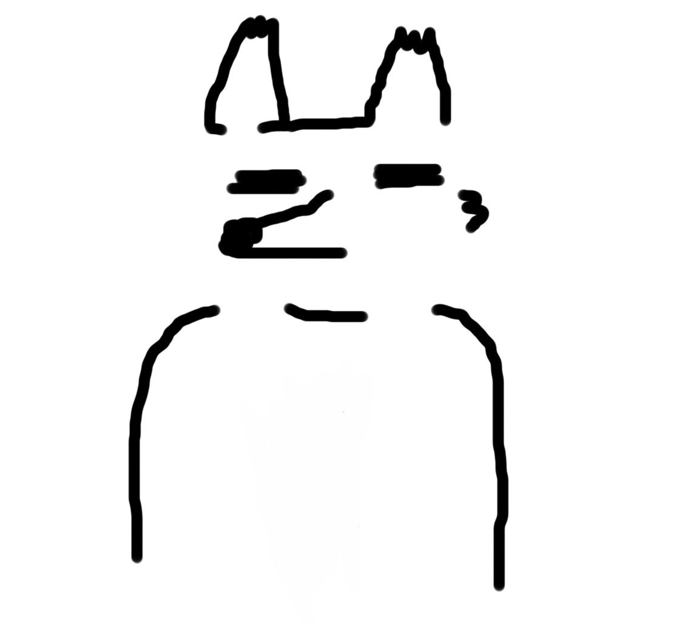

home
profile
works

Name
Age
School
About
大竹康介
19
専門学校北海道サイバークリエイターズ大学校
サーバーエンジニア志望です。バックラインからプレイヤーの夢を助けられるように努力しています。
使用言語など
C#
[使用歴：約１年２ヶ月]
主にUnityでのゲーム制作で使用しています。
Worksに本言語を使用した作品もございますのでご覧ください。
microsoft Azure
[使用歴：約１年]
クラウドサーバーの構築・運用などに使用しています。
HTML
[使用歴：約３ヶ月]
ポートフォリオサイト・管理ツールの作成時に使用しました。
CSS
[使用歴：約３ヶ月]
ポートフォリオサイト・管理ツールの作成時に使用しました。
PHP
[使用歴：約8ヶ月]
管理ツール内のDB操作で使用しました
Laravel
[使用歴：約5ヶ月]
WebAPIやアプリゲームのDB管理ツールサイトを開発する際に使用しました。
Ubuntu
[使用歴：約１０ヶ月]
Dockerやゲームアプリのサーバー構築の際に使用しました。
Docker
[使用歴：約５ヶ月]
簡単なコンテナの作成、コマンド操作ができます。
MySQL
[使用歴：約１年]
制作したゲームにて必要なデータを保管するのに使用しました。
GitHub
[使用歴：約１年]
チーム開発などのリソースを共有するのに使用しました。
Sourcetree
[使用歴：約１年]
GitHubリポジトリに対する操作を行う為に使用しました。
 home
home